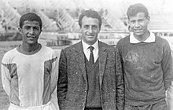

Sadok Sassi (arabe : الصادق ساسي), alias « Attouga » (عتوقة), né le 15 novembre 1945 à Tunis, est un footballeur tunisien.
Il évoluait au poste de gardien au Club africain. Il a aussi été durant treize ans le gardien de but de l'équipe de Tunisie.
Issu du quartier populaire de Bab Jedid, il intègre vite le Club africain chez les minimes. En 1962, il est sélectionné chez les juniors de l'équipe de Tunisie. Il doit rivaliser alors avec deux autres grands compétiteurs que sont Abdelkader Ghalem (Club africain) et Mahmoud Kanoun (Étoile sportive du Sahel).

En 1963, il devient le second gardien de l'équipe première derrière Kanoun. En novembre de la même année, à l'âge de 18 ans, il joue comme titulaire lors de la Coupe d'Afrique des nations 1963 (CAN). Lors du match contre le Ghana, il encaisse rapidement un but « boulet de canon » de Wilberforce Mfum. Il se reprend difficilement, si bien qu'il encaisse quatre buts lors du match contre l'équipe d'Éthiopie, dont deux de Mengistu Worku et un de Luciano Vassalo. Il garde donc un mauvais souvenir de cette CAN mais les sélectionneurs lui gardent leur confiance. En novembre 1965, il renoue avec la CAN : la Tunisie, pays organisateur, obtient une large revanche sur l'Éthiopie (4 buts à 0) et réussit le nul vierge face au Sénégal.
Mais en finale contre le Ghana, le 21 novembre, il se fait tromper une première fois et encaisse un but ; alors que son équipe est parvenue à revenir au score, il encaisse un tir d'Osei Kofi qui le trompe « à la surprise générale [car il se dit] gêné par les projecteurs ». Accablé par son erreur, il ne peut empêcher la victoire du Ghana sur un score de 3 buts à 2.
En 1972, Sadok Sassi est sélectionné dans l'équipe de la confédération africaine qui rencontre quatre adversaires dont l'équipe de France à la Coupe de l'Indépendance du Brésil.
Sassi ne renoue avec la CAN qu'en 1978 alors que la compétition se déroule au Ghana ; mais il est déjà sur le déclin et ses réflexes sont émoussés. Il ne peut rien faire lors l'élimination en demi-finale face au pays organisateur où la Tunisie perd 1 but à 0. Il incite d'ailleurs ses coéquipiers à quitter le terrain lors du match de classement pour la troisième place contre le Nigeria5. Son image en prend un coup et la Tunisie écope d'une exclusion de deux ans de la CAN pour comportement antisportif.
Sassi est par la suite l'un des principaux artisans de la qualification de la Tunisie à la coupe du monde 1978 en Argentine, à une époque où l'Afrique ne peut qualifier qu'une nation en phase finale. Malheureusement, il ne peut disputer cette phase finale après avoir été écarté par le sélectionneur national, Abdelmajid Chetali, pour cause de contre-performance en match préparatoire contre les Pays-Bas (0-4 à Tunis). Remplacé par Mokhtar Naili, il passe le mondial argentin sur le banc.
Il reste un véritable monument du football tunisien, voire un gardien « de classe internationale ». Durant 17 ans, sa réputation a conquis l'Afrique et le monde arabe. Ses principales caractéristiques sont l'« instinct du placement, la prise de balle sûre, le sens de l'anticipation, l'autorité défensive et l'excès de confiance ».

 Tunisien
Tunisien